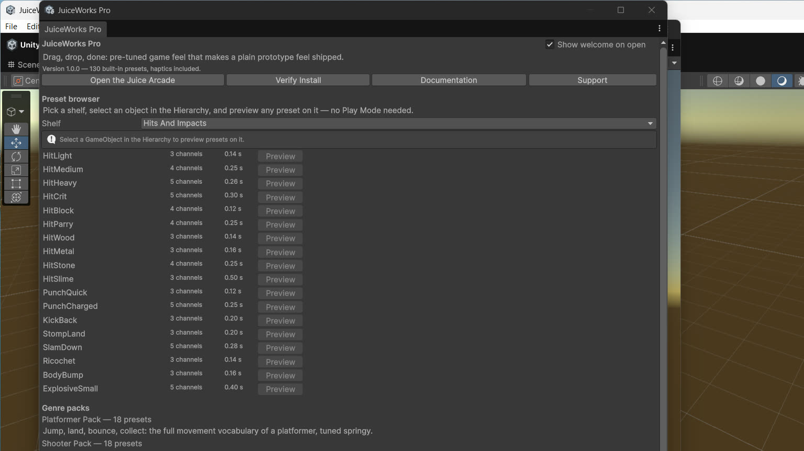

All 130 built-in presets, by shelf, with what each is made of and where it wants to live.
Every preset can be played by name, previewed in the JuiceWorks window on a selected object, and copied into your own preset asset for re-tuning. Presets that name a haptic pattern carry it in their data; the pattern fires when the cue starts.

Browsing the library in the home window: one row per preset, with channel count, duration, and a Preview button.
User Interface — 20
Unscaled time, so UI feedback plays through hit-stop and pauses.
Preset
Made of
Notes
UiButtonPress
scale dip
The press itself; pair with your click sound.
UiTapConfirm
scale pop + warm tint
A choice landing.
UiPanelPopIn
scale from 0.68 + soft flash
Panels that arrive, not appear.
UiPanelSlideIn
position settle + scale
World-space panels and banners.
UiTabSwitch
asymmetric squash + tint
Reads as “selected”.
UiToggleOn
springy pop + green tint
State turning on.
UiToggleOff
scale dip + grey tint
State turning off.
UiErrorShake
shake + red tint + Failure haptic
Invalid input, denied actions.
UiSuccessSwell
scale swell + green tint + Success
Saves, completions, claims.
UiWarningBlink
double amber flash + AlarmBuzz
Timers, low resources.
UiBadgePop
big pop, settle dip, gold tint
New badges and unlocks.
UiCounterBump
vertical squash-pop
Score and currency counters.
UiStarEarn
pop + tilt + gold flash
Star ratings, achievements.
UiHeartLose
pop-squash + red flash + tremor
Health UI losing a heart.
UiHeartGain
heart-shaped squash + pink tint
Health UI gaining one.
UiMenuOpen
scale up + rise
Menus entering.
UiMenuClose
scale down + grey
Menus leaving.
UiTooltipPop
scale from 0.6
Tooltips and hints.
UiSliderTick
tiny 70 ms pop + LightTap
Slider steps, stepper buttons.
UiLevelUpBanner
grand pop + gold flash + settle
The level-up moment.
Hits and Impacts — 18
Preset
Made of
Notes
HitLight
white flash + small squash + tremor
Fast weapons, taps, pellets.
HitMedium
flash + squash + shake + 35 ms stop
The default hit.
HitHeavy
flash + deep squash + shake + stop + tilt
Slow, weighty weapons.
HitCrit
gold flash + big squash + shake + 90 ms stop
Critical hits only.
HitBlock
blue-grey flash + recoil offset
Blocked and armored hits.
HitParry
bright flash + spin tilt + stop
Parries and deflections.
HitWood
warm tint + woody tremor
Crates, doors, fences.
HitMetal
bright flash + fast fine tremor
Armor, robots, vehicles.
HitStone
grey tint + thud tremor + small stop
Rock and concrete.
HitSlime
wide squash + rebound + green tint
Anything gelatinous.
PunchQuick
forward offset + squash + flash
Jab-speed punches.
PunchCharged
long stop + lunge + squash + shake
Charged attacks landing.
KickBack
backward arc + tilt + squash
The target's knockback feel (visual only — see Honest Limits).